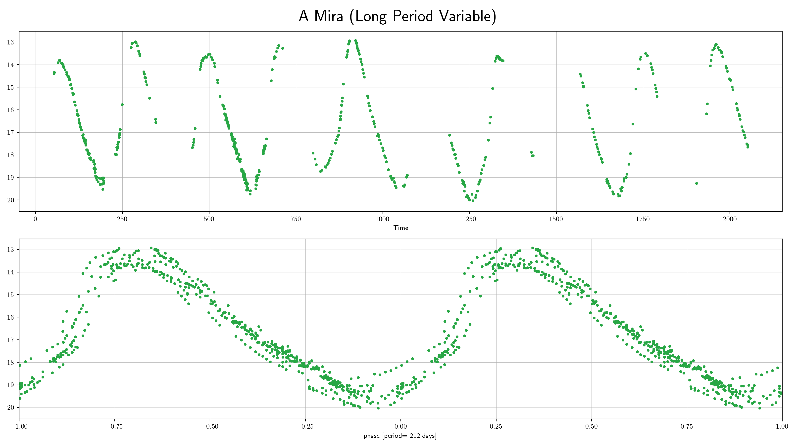

Long Period Variables (lpv)¶
Long Period Variables have periods over several tens of days. They incorporate various groups of cool luminous pulsators. The canonical example is Mira.
Classification and numbers¶
Supertypes
variable
periodic
pulsator
Subtypes
Miras
Semiregulars
OSARGs - OGLE Small Amplitude Red Giants (some astronomers do not include these under LPVs)
Occurrence rate: very common, about 105 expected in ZTF data
Non LPV wth Long Periods
RV Tau - Cepheid IIs
Other possible confusions
YSOs - their variations tend to be over shorter periods
ZTF light curves¶


Description¶
Long period variables have periods from several tens of days to over thousand day and are easy to identify due to the slow variations.
Light curve characteristics¶
periodic variable
period range: 100-1000 days
amplitude: over a mag (Mira), or a few tenths of a mag to 1 or 2 mags (semiregulars)
light curve shape:
periodic sinusoidal (Mira)
semiregular (Semiregular)
Other characteristics and selection methods¶
intrinsic lpv colors: red
absolute magnitude:
References and further reading:¶
Mowlawi et al., 2018, A&A 618, A58, The first Gaia catalogue of long-period variable candidates arxiv:1805.02035
Soszynski et al., 2009, AcA, 59, 239S, The Optical Gravitational Lensing Experiment. The OGLE-III Catalog of Variable Stars. IV. Long-Period Variables in the Large Magellanic Cloud arxix:0910.1354
Soszynski et al., 2008, AcA, 58, 293S, The Optical Gravitational Lensing Experiment. The OGLE-III Catalog of Variable Stars. II.Type II Cepheids and Anomalous Cepheids in the Large Magellanic Cloud arxiv:0811.3636